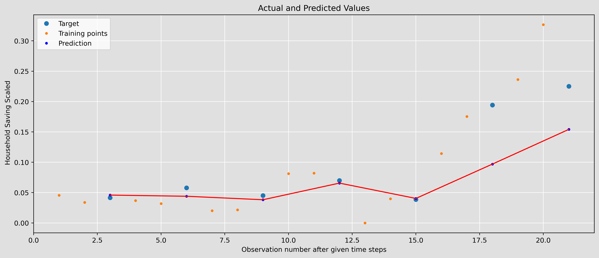

The first analysis is the median sale price analysis, which is also utilzied during previous sections. In here, the goal is to utilize three different models: LSTM, RNN, and GRU. Then make comparsion between deep learning methods and ARIMA models.
Data Preparation
The corresponding time seires dataset is prepared and cleaned with objective column and then use train test splits for furthering steps in later section.
Code
import numpy as npimport warningsimport pandas as pdimport osimport randomimport tensorflow as tffrom matplotlib import pyplot as pltfrom sklearn.preprocessing import MinMaxScalerfrom tensorflow.keras.layers import SimpleRNN, Densefrom sklearn.metrics import mean_squared_errorfrom tensorflow.keras.models import Sequentialfrom tensorflow.keras.layers import LSTM, GRU, Densefrom tensorflow.keras import regularizerstf.compat.v1.logging.set_verbosity(tf.compat.v1.logging.ERROR)warnings.filterwarnings('ignore')# Setting seeds for reproducibilityrandom.seed(236)np.random.seed(236)tf.random.set_seed(236)df = pd.read_csv("../Dataset/project/MSPUS.csv")df.head()df = df.rename(columns={"MSPUS": "y"}) # The objectivedf = df[["DATE", "y"]]X = np.array(df["y"].values.astype("float32")).reshape(df.shape[0], 1)# Train and Test Split & Normalizationdef train_test_split(data, split_percent=0.8): scaler = MinMaxScaler(feature_range=(0, 1)) data = scaler.fit_transform(data).flatten() n =len(data) split =int(n * split_percent) train_data = data[range(split)] test_data = data[split:]return train_data, test_data, datatrain_data, test_data, data = train_test_split(X)print("train shape:", train_data.shape)print("test shape:", test_data.shape)
C:\Users\yzh20\anaconda3\lib\site-packages\scipy\__init__.py:146: UserWarning:
A NumPy version >=1.16.5 and <1.23.0 is required for this version of SciPy (detected version 1.26.0
WARNING:tensorflow:From C:\Users\yzh20\anaconda3\lib\site-packages\keras\src\losses.py:2976: The name tf.losses.sparse_softmax_cross_entropy is deprecated. Please use tf.compat.v1.losses.sparse_softmax_cross_entropy instead.
WARNING:tensorflow:From C:\Users\yzh20\AppData\Local\Temp\ipykernel_43192\124761955.py:15: The name tf.logging.set_verbosity is deprecated. Please use tf.compat.v1.logging.set_verbosity instead.
train shape: (193,)
test shape: (49,)
Train & Test Dataset
Below, we can see clearly about the train and test dataset that I splitted. The goal is to have a visulization of the dataset as a whole.
Code
fig, ax = plt.subplots(figsize=(15, 6), dpi=100) # Set the size and DPI of the figurefig.patch.set_facecolor('#E0E0E0') # Set the background color for the outer figureax.set_facecolor('#E0E0E0') # Set the background color for the axes# Plot the training dataax.plot(range(0, len(train_data)), train_data, "-", label="Training Data")# Plot the test dataax.plot(range(len(train_data), len(train_data) +len(test_data)), test_data, "-", label="Test Data")# Set labels and titleax.set(xlabel="Time (days)", ylabel="Median Sale Price Scaled", title="Median Sale Price Over Time")# Add grid with white color for better visibility on the gray backgroundax.grid(color='white')# Add legend to the plotax.legend()# Show the plotplt.show()
Preparation For Input and Target
In order to correctly fit into the corresonding models, the size of x and y must be determined and transformed correctly.
Code
# PREPARE THE INPUT X AND TARGET Ydef get_XY(dat, time_steps, plot_data_partition=False):global X_ind, X, Y_ind, Y # use for plotting later# INDICES OF TARGET ARRAY# Y_ind [ 12 24 36 48 ..]; print(np.arange(1,12,1)); exit() Y_ind = np.arange(time_steps, len(dat), time_steps)# print(Y_ind); exit() Y = dat[Y_ind]# PREPARE X rows_x =len(Y) X_ind = [*range(time_steps * rows_x)]del X_ind[::time_steps] # if time_steps=10 remove every 10th entry X = dat[X_ind]# PLOTif plot_data_partition: plt.figure(figsize=(15, 6), dpi=80) plt.plot(Y_ind, Y, "o", X_ind, X, "-") plt.show()# RESHAPE INTO KERAS FORMAT X1 = np.reshape(X, (rows_x, time_steps -1, 1))# print([*X_ind]); print(X1); print(X1.shape,Y.shape); exit()return X1, Y# PARTITION DATAp =30#testX, testY = get_XY(test_data, p)trainX, trainY = get_XY(train_data, p)#USER PARAMrecurrent_hidden_units =3epochs =200f_batch =0.2# fraction used for batch sizeoptimizer ="RMSprop"validation_split =0.2# trainY=trainY.reshape(trainY.shape[0],1)# testY=testY.reshape(testY.shape[0],1)print("Testing Array Shape:", testX.shape, testY.shape)print("Training Array Shape:", trainX.shape, trainY.shape)
Now, we are ready for training into the model for analysis.
LSTM
For this LSTM model, we will compare the performance using RMSE for regularization and no regularization.
NO Regularization
Code
model = Sequential()model.add( LSTM( recurrent_hidden_units, return_sequences=False, input_shape=(trainX.shape[1], trainX.shape[2]), activation="tanh", ))# NEED TO TAKE THE OUTPUT RNN AND CONVERT TO SCALARmodel.add(Dense(units=1, activation="linear"))# COMPILE THE MODELmodel.compile(loss="MeanSquaredError", optimizer=optimizer)model.summary()
# TRAIN MODELhistory = model.fit( trainX, trainY, epochs=epochs, batch_size=int(f_batch * trainX.shape[0]), validation_split=validation_split, verbose=0,)# MAKE PREDICTIONStrain_predict = model.predict(trainX).squeeze()test_predict = model.predict(testX).squeeze()import matplotlib.pyplot as pltloss = history.history['loss']val_loss = history.history['val_loss']epochs =range(1, len(loss) +1)plt.figure(facecolor='#E0E0E0', dpi=200) # Set the background color and DPIplt.plot(epochs, loss, 'r', label='Training loss')plt.plot(epochs, val_loss, 'c', label='Validation loss')plt.title('Training and validation loss')plt.legend()plt.gca().set_facecolor('#E0E0E0') # Set the axes background colorplt.grid(color='white') # Set the grid color to white for better visibility on the gray backgroundplt.show()# Make predictionstrain_predict = model.predict(trainX).flatten()test_predict = model.predict(testX).flatten() # Flattening to ensure it is a 1D array# Now, print the shapes to verifyprint("Shape of test_predict after flattening:", test_predict.shape)# Compute RMSEtrain_rmse = np.sqrt(mean_squared_error(trainY, train_predict))test_rmse = np.sqrt(mean_squared_error(testY, test_predict))# Print MSE and RMSEprint("Train MSE = %.5f RMSE = %.5f"% (np.mean((trainY - train_predict) **2.0), train_rmse))print("Test MSE = %.5f RMSE = %.5f"% (np.mean((testY - test_predict) **2.0), test_rmse))def plot_result(trainY, testY, train_predict, test_predict): plt.figure(figsize=(15, 6), dpi=200, facecolor='#E0E0E0') # Set higher DPI and background color for the figure plt.gca().set_facecolor('#E0E0E0') # Set the axes background color# ORIGINAL DATAprint(X.shape, Y.shape) plt.plot(Y_ind, Y, "o", label="Target") plt.plot(X_ind, X, ".", label="Training points") plt.plot(Y_ind, train_predict, "b.", label="Prediction") plt.plot(Y_ind, train_predict, "r-") plt.legend() plt.xlabel("Observation number after given time steps") plt.ylabel("Median Sale Price Scaled") plt.title("Actual and Predicted Values") plt.grid(color='white') # Set grid color to white for better visibility plt.show()
We can see that from this plot based on LSTM no regulariztaion, the performance of the model is pretty good. The targets and prediction values are close.
With Regularization
Now, we compare the model by adding some regularization. The goal of the regularization is to prevent overfitting.
Code
# CREATE MODELmodel = Sequential()# COMMENT/UNCOMMENT TO USE RNN, LSTM,GRUmodel.add( LSTM(# model.add(SimpleRNN(# model.add(GRU( recurrent_hidden_units, return_sequences=False, input_shape=(trainX.shape[1], trainX.shape[2]),# recurrent_dropout=0.8, recurrent_regularizer=regularizers.L2(1e-2), activation="tanh", ))# NEED TO TAKE THE OUTPUT RNN AND CONVERT TO SCALARmodel.add(Dense(units=1, activation="linear"))# COMPILE THE MODELmodel.compile(loss="MeanSquaredError", optimizer=optimizer)model.summary()
# TRAIN MODELhistory = model.fit( trainX, trainY, epochs=200, batch_size=int(f_batch * trainX.shape[0]), validation_split=validation_split, verbose=0,)# MAKE PREDICTIONStrain_predict = model.predict(trainX).squeeze()test_predict = model.predict(testX).squeeze()import matplotlib.pyplot as pltloss = history.history['loss']val_loss = history.history['val_loss']epochs =range(1, len(loss) +1)plt.figure(facecolor='#E0E0E0', dpi=200) # Set the background color and DPIplt.plot(epochs, loss, 'r', label='Training loss')plt.plot(epochs, val_loss, 'c', label='Validation loss')plt.title('Training and validation loss')plt.legend()plt.gca().set_facecolor('#E0E0E0') # Set the axes background colorplt.grid(color='white') # Set the grid color to white for better visibility on the gray backgroundplt.show()# Make predictionstrain_predict = model.predict(trainX).flatten()test_predict = model.predict(testX).flatten() # Flattening to ensure it is a 1D array# Now, print the shapes to verifyprint("Shape of test_predict after flattening:", test_predict.shape)# Compute RMSEtrain_rmse = np.sqrt(mean_squared_error(trainY, train_predict))test_rmse = np.sqrt(mean_squared_error(testY, test_predict))# Print MSE and RMSEprint("Train MSE = %.5f RMSE = %.5f"% (np.mean((trainY - train_predict) **2.0), train_rmse))print("Test MSE = %.5f RMSE = %.5f"% (np.mean((testY - test_predict) **2.0), test_rmse))
The result suggests that the model is able to capture the underlying trend in the data quite well. Regularization comparsion proved that the model did not overfit. Also, the smoothness of the prediction curve indicates that the L2 regularization has effectively penalized overly complex models that could have fit the noise in the training data.
How Far Into Future
The predictions seem to align well with the actual data for most of the original dataset. However, there appears to be a slight divergence toward the end. This divergence might indicate the limit of the models predictive horizon, which is about 175 days ahead. In this case, we can say that the model can predict with relatively accuracy for 200 days ahead.
RNN
No Regularization
Likewise, we will test the model prediction and errors with and without regularization for each model.
Code
# CREATE MODELmodel = Sequential()# COMMENT/UNCOMMENT TO USE RNN, LSTM,GRUmodel.add( SimpleRNN(# model.add(GRU( recurrent_hidden_units, return_sequences=False, input_shape=(trainX.shape[1], trainX.shape[2]), activation="tanh", ))# NEED TO TAKE THE OUTPUT RNN AND CONVERT TO SCALARmodel.add(Dense(units=1, activation="linear"))# COMPILE THE MODELmodel.compile(loss="MeanSquaredError", optimizer=optimizer)model.summary()history = model.fit( trainX, trainY, epochs=200, batch_size=int(f_batch * trainX.shape[0]), validation_split=validation_split, verbose=0,)# MAKE PREDICTIONStrain_predict = model.predict(trainX).squeeze()test_predict = model.predict(testX).squeeze()import matplotlib.pyplot as pltloss = history.history['loss']val_loss = history.history['val_loss']epochs =range(1, len(loss) +1)plt.figure(facecolor='#E0E0E0', dpi=200) # Set the background color and DPIplt.plot(epochs, loss, 'r', label='Training loss')plt.plot(epochs, val_loss, 'c', label='Validation loss')plt.title('Training and validation loss')plt.legend()plt.gca().set_facecolor('#E0E0E0') # Set the axes background colorplt.grid(color='white') # Set the grid color to white for better visibility on the gray backgroundplt.show()# Make predictionstrain_predict = model.predict(trainX).flatten()test_predict = model.predict(testX).flatten() # Flattening to ensure it is a 1D array# Now, print the shapes to verifyprint("Shape of test_predict after flattening:", test_predict.shape)# Compute RMSEtrain_rmse = np.sqrt(mean_squared_error(trainY, train_predict))test_rmse = np.sqrt(mean_squared_error(testY, test_predict))# Print MSE and RMSEprint("Train MSE = %.5f RMSE = %.5f"% (np.mean((trainY - train_predict) **2.0), train_rmse))print("Test MSE = %.5f RMSE = %.5f"% (np.mean((testY - test_predict) **2.0), test_rmse))
Shape of test_predict after flattening: (1,)
Train MSE = 0.00137 RMSE = 0.03706
Test MSE = 0.05575 RMSE = 0.23612
With no regularization, the RNN performs better than LSTM with lower rmse. However, regularization can help us prevent overfitting. Therefore, we need further using regularization to make thorough analysis.
Shape of test_predict after flattening: (1,)
Train MSE = 0.27946 RMSE = 0.52864
Test MSE = 1.46867 RMSE = 1.21189
Code
# TRAIN MODELhistory = model.fit( trainX, trainY, epochs=200, batch_size=int(f_batch * trainX.shape[0]), validation_split=validation_split, verbose=0,)import matplotlib.pyplot as pltloss = history.history['loss']val_loss = history.history['val_loss']epochs =range(1, len(loss) +1)plt.figure(facecolor='#E0E0E0', dpi=200) # Set the background color and DPIplt.plot(epochs, loss, 'r', label='Training loss')plt.plot(epochs, val_loss, 'c', label='Validation loss')plt.title('Training and validation loss')plt.legend()plt.gca().set_facecolor('#E0E0E0') # Set the axes background colorplt.grid(color='white') # Set the grid color to white for better visibility on the gray backgroundplt.show()print("Train MSE = %.5f RMSE = %.5f"% (train_rmse**2.0, train_rmse))print("Test MSE = %.5f RMSE = %.5f"% (test_rmse**2.0, test_rmse))
Now, there are relatievly large differences when using regularization in RNN model. The results show that the model will overfit if we do not use regularization in RNN. The result for RNN model with regularization performs less than the LSTM model with higher rmse values.
The figure of the predictions and actual values also proves that the RNN model with regulariztaion performs less than the LSTM model. We can see that there are differences for the step points
GRU
The third model is GRU, we will also test the two results for both with regulariztaion and no regularization. Then by combining the results in a table, we can compare them clearly.
NO Regularization
Likewise, we will test the model prediction and errors with and without regularization for each model.
Code
# CREATE MODELmodel = Sequential()# COMMENT/UNCOMMENT TO USE RNN, LSTM,GRUmodel.add( GRU( recurrent_hidden_units, return_sequences=False, input_shape=(trainX.shape[1], trainX.shape[2]), activation="tanh", ))# NEED TO TAKE THE OUTPUT RNN AND CONVERT TO SCALARmodel.add(Dense(units=1, activation="linear"))# COMPILE THE MODELmodel.compile(loss="MeanSquaredError", optimizer=optimizer)model.summary()# TRAIN MODELnp.random.seed(42)tf.random.set_seed(42)history = model.fit( trainX, trainY, epochs=200, batch_size=int(f_batch * trainX.shape[0]), validation_split=validation_split, verbose=0,)# MAKE PREDICTIONStrain_predict = model.predict(trainX).squeeze()test_predict = model.predict(testX).squeeze()import matplotlib.pyplot as pltloss = history.history['loss']val_loss = history.history['val_loss']epochs =range(1, len(loss) +1)plt.figure(facecolor='#E0E0E0', dpi=200) # Set the background color and DPIplt.plot(epochs, loss, 'r', label='Training loss')plt.plot(epochs, val_loss, 'c', label='Validation loss')plt.title('Training and validation loss')plt.legend()plt.gca().set_facecolor('#E0E0E0') # Set the axes background colorplt.grid(color='white') # Set the grid color to white for better visibility on the gray backgroundplt.show()# Make predictionstrain_predict = model.predict(trainX).flatten()test_predict = model.predict(testX).flatten() # Flattening to ensure it is a 1D array# Now, print the shapes to verifyprint("Shape of test_predict after flattening:", test_predict.shape)# Compute RMSEtrain_rmse = np.sqrt(mean_squared_error(trainY, train_predict))test_rmse = np.sqrt(mean_squared_error(testY, test_predict))# Print MSE and RMSEprint("Train MSE = %.5f RMSE = %.5f"% (np.mean((trainY - train_predict) **2.0), train_rmse))print("Test MSE = %.5f RMSE = %.5f"% (np.mean((testY - test_predict) **2.0), test_rmse))
We can see that if we add regularization, the result of RMSE becomes higher. This shows that with no regularization, the GRU model overfitted.
In general, in my case, with regularization, LSTM model performed the best among the three models. RNN model perfomed the least among the three models.
Household Saving Deep Learning Analysis
As we did in ARMA section, we will also do the deep learning analysis and compare with the results for household saving analysis.
Data Preparation
Code
df = pd.read_csv("../Dataset/project/household_saving.csv")df = df.rename(columns={"W398RC1A027NBEA": "y"}) # The objectivedf = df[["DATE", "y"]]X = np.array(df["y"].values.astype("float32")).reshape(df.shape[0], 1)# Train and Test Split & Normalizationdef train_test_split(data, split_percent=0.8): scaler = MinMaxScaler(feature_range=(0, 1)) data = scaler.fit_transform(data).flatten() n =len(data) split =int(n * split_percent) train_data = data[range(split)] test_data = data[split:]return train_data, test_data, datatrain_data, test_data, data = train_test_split(X)# PREPARE THE INPUT X AND TARGET Ydef get_XY(dat, time_steps, plot_data_partition=False):global X_ind, X, Y_ind, Y # use for plotting later# INDICES OF TARGET ARRAY# Y_ind [ 12 24 36 48 ..]; print(np.arange(1,12,1)); exit() Y_ind = np.arange(time_steps, len(dat), time_steps)# print(Y_ind); exit() Y = dat[Y_ind]# PREPARE X rows_x =len(Y) X_ind = [*range(time_steps * rows_x)]del X_ind[::time_steps] # if time_steps=10 remove every 10th entry X = dat[X_ind]# PLOTif plot_data_partition: plt.figure(figsize=(15, 6), dpi=80) plt.plot(Y_ind, Y, "o", X_ind, X, "-") plt.show()# RESHAPE INTO KERAS FORMAT X1 = np.reshape(X, (rows_x, time_steps -1, 1))# print([*X_ind]); print(X1); print(X1.shape,Y.shape); exit()return X1, Y# PARTITION DATAp =3#testX, testY = get_XY(test_data, p)trainX, trainY = get_XY(train_data, p)#USER PARAMrecurrent_hidden_units =3epochs =200f_batch =0.2# fraction used for batch sizeoptimizer ="RMSprop"validation_split =0.2# trainY=trainY.reshape(trainY.shape[0],1)# testY=testY.reshape(testY.shape[0],1)print("Testing Array Shape:", testX.shape, testY.shape)print("Training Array Shape:", trainX.shape, trainY.shape)
After getting the corresponding train and test datasets, we can continue the process similarly.
LSTM
No Regularization
Code
model = Sequential()model.add( LSTM( recurrent_hidden_units, return_sequences=False, input_shape=(trainX.shape[1], trainX.shape[2]), activation="tanh", ))# NEED TO TAKE THE OUTPUT RNN AND CONVERT TO SCALARmodel.add(Dense(units=1, activation="linear"))# COMPILE THE MODELmodel.compile(loss="MeanSquaredError", optimizer=optimizer)model.summary()# TRAIN MODELhistory = model.fit( trainX, trainY, epochs=200, batch_size=int(f_batch * trainX.shape[0]), validation_split=validation_split, verbose=0,)# MAKE PREDICTIONStrain_predict = model.predict(trainX).squeeze()test_predict = model.predict(testX).squeeze()import matplotlib.pyplot as pltloss = history.history['loss']val_loss = history.history['val_loss']epochs =range(1, len(loss) +1)plt.figure(facecolor='#E0E0E0', dpi=200) # Set the background color and DPIplt.plot(epochs, loss, 'r', label='Training loss')plt.plot(epochs, val_loss, 'c', label='Validation loss')plt.title('Training and validation loss')plt.legend()plt.gca().set_facecolor('#E0E0E0') # Set the axes background colorplt.grid(color='white') # Set the grid color to white for better visibility on the gray backgroundplt.show()# Make predictionstrain_predict = model.predict(trainX).flatten()test_predict = model.predict(testX).flatten() # Flattening to ensure it is a 1D array# Now, print the shapes to verifyprint("Shape of test_predict after flattening:", test_predict.shape)# Compute RMSEtrain_rmse = np.sqrt(mean_squared_error(trainY, train_predict))test_rmse = np.sqrt(mean_squared_error(testY, test_predict))# Print MSE and RMSEprint("Train MSE = %.5f RMSE = %.5f"% (np.mean((trainY - train_predict) **2.0), train_rmse))print("Test MSE = %.5f RMSE = %.5f"% (np.mean((testY - test_predict) **2.0), test_rmse))def plot_result(trainY, testY, train_predict, test_predict): plt.figure(figsize=(15, 6), dpi=200, facecolor='#E0E0E0') # Set higher DPI and background color for the figure plt.gca().set_facecolor('#E0E0E0') # Set the axes background color# ORIGINAL DATAprint(X.shape, Y.shape) plt.plot(Y_ind, Y, "o", label="Target") plt.plot(X_ind, X, ".", label="Training points") plt.plot(Y_ind, train_predict, "b.", label="Prediction") plt.plot(Y_ind, train_predict, "r-") plt.legend() plt.xlabel("Observation number after given time steps") plt.ylabel(" Household Saving Scaled") plt.title("Actual and Predicted Values") plt.grid(color='white') # Set grid color to white for better visibility plt.show()plot_result(trainY, testY, train_predict, test_predict)
Shape of test_predict after flattening: (1,)
Train MSE = 0.00669 RMSE = 0.08181
Test MSE = 0.16973 RMSE = 0.41198
(14,) (7,)
The RMSE for household saving analysis is about 0.41, we can see that the points predicted roughly the same from 1 to 15 time steps. Then it started to predict wrongly. Then, we will compare with regularization conducted to see if the result is overfitted.
With Regularization
Code
# CREATE MODELmodel = Sequential()# COMMENT/UNCOMMENT TO USE RNN, LSTM,GRUmodel.add( LSTM(# model.add(SimpleRNN(# model.add(GRU( recurrent_hidden_units, return_sequences=False, input_shape=(trainX.shape[1], trainX.shape[2]),# recurrent_dropout=0.8, recurrent_regularizer=regularizers.L2(1e-2), activation="tanh", ))# NEED TO TAKE THE OUTPUT RNN AND CONVERT TO SCALARmodel.add(Dense(units=1, activation="linear"))# COMPILE THE MODELmodel.compile(loss="MeanSquaredError", optimizer=optimizer)model.summary()# TRAIN MODELhistory = model.fit( trainX, trainY, epochs=200, batch_size=int(f_batch * trainX.shape[0]), validation_split=validation_split, verbose=0,)# MAKE PREDICTIONStrain_predict = model.predict(trainX).squeeze()test_predict = model.predict(testX).squeeze()import matplotlib.pyplot as pltloss = history.history['loss']val_loss = history.history['val_loss']epochs =range(1, len(loss) +1)plt.figure(facecolor='#E0E0E0', dpi=200) # Set the background color and DPIplt.plot(epochs, loss, 'r', label='Training loss')plt.plot(epochs, val_loss, 'c', label='Validation loss')plt.title('Training and validation loss')plt.legend()plt.gca().set_facecolor('#E0E0E0') # Set the axes background colorplt.grid(color='white') # Set the grid color to white for better visibility on the gray backgroundplt.show()# Make predictionstrain_predict = model.predict(trainX).flatten()test_predict = model.predict(testX).flatten() # Flattening to ensure it is a 1D array# Now, print the shapes to verifyprint("Shape of test_predict after flattening:", test_predict.shape)# Compute RMSEtrain_rmse = np.sqrt(mean_squared_error(trainY, train_predict))test_rmse = np.sqrt(mean_squared_error(testY, test_predict))# Print MSE and RMSEprint("Train MSE = %.5f RMSE = %.5f"% (np.mean((trainY - train_predict) **2.0), train_rmse))print("Test MSE = %.5f RMSE = %.5f"% (np.mean((testY - test_predict) **2.0), test_rmse))plot_result(trainY, testY, train_predict, test_predict)
Shape of test_predict after flattening: (1,)
Train MSE = 0.00511 RMSE = 0.07146
Test MSE = 0.14327 RMSE = 0.37851
(14,) (7,)
From this result, we can see that the RMSE is actually lower. This means that in this case, the LSTM did not overfit for the household saving dataset. The possible reason could be the size of the dataset is relatively small which actually prevented the overfitting. However, I think that due to the small size of the dataset, the deep learning model is not as effective as the ARIMA models.
RNN
For RNN, we do the same process.
No Regularization
Code
# CREATE MODELmodel = Sequential()# COMMENT/UNCOMMENT TO USE RNN, LSTM,GRUmodel.add( SimpleRNN(# model.add(GRU( recurrent_hidden_units, return_sequences=False, input_shape=(trainX.shape[1], trainX.shape[2]), activation="tanh", ))# NEED TO TAKE THE OUTPUT RNN AND CONVERT TO SCALARmodel.add(Dense(units=1, activation="linear"))# COMPILE THE MODELmodel.compile(loss="MeanSquaredError", optimizer=optimizer)model.summary()history = model.fit( trainX, trainY, epochs=200, batch_size=int(f_batch * trainX.shape[0]), validation_split=validation_split, verbose=0,)import matplotlib.pyplot as pltloss = history.history['loss']val_loss = history.history['val_loss']epochs =range(1, len(loss) +1)plt.figure(facecolor='#E0E0E0', dpi=200) # Set the background color and DPIplt.plot(epochs, loss, 'r', label='Training loss')plt.plot(epochs, val_loss, 'c', label='Validation loss')plt.title('Training and validation loss')plt.legend()plt.gca().set_facecolor('#E0E0E0') # Set the axes background colorplt.grid(color='white') # Set the grid color to white for better visibility on the gray backgroundplt.show()# Make predictionstrain_predict = model.predict(trainX).flatten()test_predict = model.predict(testX).flatten() # Flattening to ensure it is a 1D array# Now, print the shapes to verifyprint("Shape of test_predict after flattening:", test_predict.shape)# Compute RMSEtrain_rmse = np.sqrt(mean_squared_error(trainY, train_predict))test_rmse = np.sqrt(mean_squared_error(testY, test_predict))# Print MSE and RMSEprint("Train MSE = %.5f RMSE = %.5f"% (np.mean((trainY - train_predict) **2.0), train_rmse))print("Test MSE = %.5f RMSE = %.5f"% (np.mean((testY - test_predict) **2.0), test_rmse))plot_result(trainY, testY, train_predict, test_predict)
Shape of test_predict after flattening: (1,)
Train MSE = 0.00400 RMSE = 0.06322
Test MSE = 0.11479 RMSE = 0.33881
(14,) (7,)
For RNN with no regularization, the result is higher compare to LSTM
With Regularization
Code
# CREATE MODELmodel = Sequential()# COMMENT/UNCOMMENT TO USE RNN, LSTM,GRUmodel.add( SimpleRNN(# model.add(GRU( recurrent_hidden_units, return_sequences=False, input_shape=(trainX.shape[1], trainX.shape[2]),# recurrent_dropout=0.8, recurrent_regularizer=regularizers.L2(1e-2), activation="tanh", ))# NEED TO TAKE THE OUTPUT RNN AND CONVERT TO SCALARmodel.add(Dense(units=1, activation="linear"))# COMPILE THE MODELmodel.compile(loss="MeanSquaredError", optimizer=optimizer)model.summary()# Check shapes again to verifyprint("Shape of test_predict after flattening:", test_predict.shape)# Compute RMSEtrain_rmse = np.sqrt(mean_squared_error(trainY, train_predict))test_rmse = np.sqrt(mean_squared_error(testY, test_predict))# TRAIN MODELhistory = model.fit( trainX, trainY, epochs=200, batch_size=int(f_batch * trainX.shape[0]), validation_split=validation_split, verbose=0,)import matplotlib.pyplot as pltloss = history.history['loss']val_loss = history.history['val_loss']epochs =range(1, len(loss) +1)plt.figure(facecolor='#E0E0E0', dpi=200) # Set the background color and DPIplt.plot(epochs, loss, 'r', label='Training loss')plt.plot(epochs, val_loss, 'c', label='Validation loss')plt.title('Training and validation loss')plt.legend()plt.gca().set_facecolor('#E0E0E0') # Set the axes background colorplt.grid(color='white') # Set the grid color to white for better visibility on the gray backgroundplt.show()# Print MSE and RMSEprint("Train MSE = %.5f RMSE = %.5f"% (np.mean((trainY - train_predict) **2.0), train_rmse))print("Test MSE = %.5f RMSE = %.5f"% (np.mean((testY - test_predict) **2.0), test_rmse))plot_result(trainY, testY, train_predict, test_predict)
Again, we can see that the RNN model with and without regularization yields similar results. I think the reason could be the same as LSTM, the dataset is relatively small such that there is no overfitting yet.
GRU
Same steps with GRU
No Regularization
Code
# CREATE MODELmodel = Sequential()# COMMENT/UNCOMMENT TO USE RNN, LSTM,GRUmodel.add( GRU( recurrent_hidden_units, return_sequences=False, input_shape=(trainX.shape[1], trainX.shape[2]), activation="tanh", ))# NEED TO TAKE THE OUTPUT RNN AND CONVERT TO SCALARmodel.add(Dense(units=1, activation="linear"))# COMPILE THE MODELmodel.compile(loss="MeanSquaredError", optimizer=optimizer)model.summary()history = model.fit( trainX, trainY, epochs=200, batch_size=int(f_batch * trainX.shape[0]), validation_split=validation_split, verbose=0,)import matplotlib.pyplot as pltloss = history.history['loss']val_loss = history.history['val_loss']epochs =range(1, len(loss) +1)plt.figure(facecolor='#E0E0E0', dpi=200) # Set the background color and DPIplt.plot(epochs, loss, 'r', label='Training loss')plt.plot(epochs, val_loss, 'c', label='Validation loss')plt.title('Training and validation loss')plt.legend()plt.gca().set_facecolor('#E0E0E0') # Set the axes background colorplt.grid(color='white') # Set the grid color to white for better visibility on the gray backgroundplt.show()# Make predictionstrain_predict = model.predict(trainX).flatten()test_predict = model.predict(testX).flatten() # Flattening to ensure it is a 1D array# Now, print the shapes to verifyprint("Shape of test_predict after flattening:", test_predict.shape)# Compute RMSEtrain_rmse = np.sqrt(mean_squared_error(trainY, train_predict))test_rmse = np.sqrt(mean_squared_error(testY, test_predict))# Print MSE and RMSEprint("Train MSE = %.5f RMSE = %.5f"% (np.mean((trainY - train_predict) **2.0), train_rmse))print("Test MSE = %.5f RMSE = %.5f"% (np.mean((testY - test_predict) **2.0), test_rmse))plot_result(trainY, testY, train_predict, test_predict)
Shape of test_predict after flattening: (1,)
Train MSE = 0.00211 RMSE = 0.04596
Test MSE = 0.08885 RMSE = 0.29807
(14,) (7,)

We can see that overall, GRU has the lowest RMSE for no regularization.
With Regularization
Code
# CREATE MODELmodel = Sequential()# COMMENT/UNCOMMENT TO USE RNN, LSTM,GRUmodel.add( GRU( recurrent_hidden_units, return_sequences=False, input_shape=(trainX.shape[1], trainX.shape[2]),# recurrent_dropout=0.8, recurrent_regularizer=regularizers.L2(1e-2), activation="tanh", ))# NEED TO TAKE THE OUTPUT RNN AND CONVERT TO SCALARmodel.add(Dense(units=1, activation="linear"))# COMPILE THE MODELmodel.compile(loss="MeanSquaredError", optimizer=optimizer)model.summary()# TRAIN MODELhistory = model.fit( trainX, trainY, epochs=200, batch_size=int(f_batch * trainX.shape[0]), validation_split=validation_split, verbose=0,)import matplotlib.pyplot as pltloss = history.history['loss']val_loss = history.history['val_loss']epochs =range(1, len(loss) +1)plt.figure(facecolor='#E0E0E0', dpi=200) # Set the background color and DPIplt.plot(epochs, loss, 'r', label='Training loss')plt.plot(epochs, val_loss, 'c', label='Validation loss')plt.title('Training and validation loss')plt.legend()plt.gca().set_facecolor('#E0E0E0') # Set the axes background colorplt.grid(color='white') # Set the grid color to white for better visibility on the gray backgroundplt.show()# Make predictionstrain_predict = model.predict(trainX).flatten() # Ensures a 1D array outputtest_predict = model.predict(testX).flatten()# Compute RMSEtrain_rmse = np.sqrt(mean_squared_error(trainY, train_predict))test_rmse = np.sqrt(mean_squared_error(testY, test_predict))# Print MSE and RMSEprint("Train MSE = %.5f RMSE = %.5f"% (np.mean((trainY - train_predict) **2.0), train_rmse))print("Test MSE = %.5f RMSE = %.5f"% (np.mean((testY - test_predict) **2.0), test_rmse))# Call the function with your dataplot_result(trainY, testY, train_predict, test_predict)
Overll, the GRU model performs the best for household savings analysis.
Discussions I
For Median Sale Price
Deep learning methods comparison
In my case, the LSTM performed the best with lowest RMSE. In addition, the prediction plot with the actual data also shows that the LSTM is better among the three methods for my median sale price analysis.
Regulariztaion Effect
The result suggests that the model is able to capture the underlying trend in the data quite well. Regularization comparsion proved that the model did not overfit too much. Also, the smoothness of the prediction curve indicates that the L2 regularization has effectively penalized overly complex models that could have fit the noise in the training data.
How Far can the deep learning methods predict
In my analsyis for median sale price, overall, the LSTM made relatively better predictions. The predictions started going wrong after 150 given steps. Therefore, I think that for deep learning methods, it can predict around half of year correctly.
Comparison to ARMA/ARIMA
For median sale price analsyis, the LSTM model performs the best with relatively low RMSE. Compare to the ARIMA model in ARIMA section, the model used for median sale price was ARIMA(1,1,1). And the RMSE is higher than the deep learning methods. Therefore, in my case, I believe that the LSTM model provides better predictions. The possible reason I think is that the deep learning models can evaluate the dataset by capturing more features. Especially that the dataset has an obvious upwarding trend. The deep learning model can interpret the trend better with each epoch trained therefore we can get better results. However, the overfitting could exist therefore regularization must be included to avoid overfitting.
For Household Saving
We can see that comparing to Median Sale Price analysis, the analysis for household saving is not as effective. The reason is because of the dataset size different. With less datapoints, the models for household saving did not perform as well as they should be. We also can not determine the prediction power of models on this dataset. Therefore, in my case for household saving analysis, the deep learning methods are not as effective as the ARIMA models.
Deep learning methods comparison
In my case, the GRU performed the best with lowest RMSE. In addition, the prediction plot with the actual data also shows that the GRU is better among the three methods for my household saving analysis.
Regularization Effect
In this case, the regularization actually did not change too much for the results. Regularization comparsion proved that the model did not overfit. Again, it could be due to the small size of the dataset.
How Far can the deep learning methods predict
The RMSE for household saving analysis is about 0.41, we can see that the points predicted roughly the same from 1 to 15 time steps. Then it started to predict wrongly. Again, it could be due to the small size of this dataset. It is hard to tell the exact prediction power. Overall, I do not think that deep learning methods are effective for household saving analysis.
Comparison to ARMA/ARIMA
For household saving analsyis, I think that due to the small size of the dataset, the deep learning model is not as effective as the ARIMA models. ARIMA model can capture better for this dataset by considering different patterns such as stationary and season. In my case, I believe that the ARIMA model performs better. For deep learning methods, although the results have smaller RMSEs, I still think that the analysis could be improved by using larger datasets.
GDP Deflator Deep Learning Analysis (Compare With VAR Model)
In my ARIMAX and VAR section, I made analysis on two VAR models. Both of the VAR models contain the GDP deflator variable since it is a crucial factor in representing the economic as a whole. It can provide insights in determine the effects and impacts on personal income and saving, further impling the housing prices and affordability. Therefore, in here, I want to gain insights and make comparison by using deep learning methods.
Data Preparation
In this code part, I also included datasets for mutivariable analysis in later section
Code
df = pd.read_csv("../Dataset/project/A191RI1Q225SBEA.csv")df2 = pd.read_csv("../Dataset/project/MSPUS.csv")df3 = pd.read_csv("../Dataset/project/PSAVERT.csv")df = df.rename(columns={"A191RI1Q225SBEA": "y"}) # The objectivedf = df[["DATE", "y"]]X = np.array(df["y"].values.astype("float32")).reshape(df.shape[0], 1)# Train and Test Split & Normalizationdef train_test_split(data, split_percent=0.8): scaler = MinMaxScaler(feature_range=(0, 1)) data = scaler.fit_transform(data).flatten() n =len(data) split =int(n * split_percent) train_data = data[range(split)] test_data = data[split:]return train_data, test_data, datatrain_data, test_data, data = train_test_split(X)print("train shape:", train_data.shape)print("test shape:", test_data.shape)fig, ax = plt.subplots(figsize=(15, 6), dpi=100) # Set the size and DPI of the figurefig.patch.set_facecolor('#E0E0E0') # Set the background color for the outer figureax.set_facecolor('#E0E0E0') # Set the background color for the axes# Plot the training dataax.plot(range(0, len(train_data)), train_data, "-", label="Training Data")# Plot the test dataax.plot(range(len(train_data), len(train_data) +len(test_data)), test_data, "-", label="Test Data")# Set labels and titleax.set(xlabel="Time (days)", ylabel="Median GDP Deflator Scaled", title="Median GDP Deflator Over Time")# Add grid with white color for better visibility on the gray backgroundax.grid(color='white')# Add legend to the plotax.legend()# Show the plotplt.show()# PREPARE THE INPUT X AND TARGET Ydef get_XY(dat, time_steps, plot_data_partition=False):global X_ind, X, Y_ind, Y # use for plotting later# INDICES OF TARGET ARRAY# Y_ind [ 12 24 36 48 ..]; print(np.arange(1,12,1)); exit() Y_ind = np.arange(time_steps, len(dat), time_steps)# print(Y_ind); exit() Y = dat[Y_ind]# PREPARE X rows_x =len(Y) X_ind = [*range(time_steps * rows_x)]del X_ind[::time_steps] # if time_steps=10 remove every 10th entry X = dat[X_ind]# PLOTif plot_data_partition: plt.figure(figsize=(15, 6), dpi=80) plt.plot(Y_ind, Y, "o", X_ind, X, "-") plt.show()# RESHAPE INTO KERAS FORMAT X1 = np.reshape(X, (rows_x, time_steps -1, 1))# print([*X_ind]); print(X1); print(X1.shape,Y.shape); exit()return X1, Y# PARTITION DATAp =30#testX, testY = get_XY(test_data, p)trainX, trainY = get_XY(train_data, p)#USER PARAMrecurrent_hidden_units =3epochs =200f_batch =0.2# fraction used for batch sizeoptimizer ="RMSprop"validation_split =0.2print("Testing Array Shape:", testX.shape, testY.shape)print("Training Array Shape:", trainX.shape, trainY.shape)
model = Sequential()model.add( LSTM( recurrent_hidden_units, return_sequences=False, input_shape=(trainX.shape[1], trainX.shape[2]), activation="tanh", ))# NEED TO TAKE THE OUTPUT RNN AND CONVERT TO SCALARmodel.add(Dense(units=1, activation="linear"))# COMPILE THE MODELmodel.compile(loss="MeanSquaredError", optimizer=optimizer)model.summary()# TRAIN MODELhistory = model.fit( trainX, trainY, epochs=epochs, batch_size=int(f_batch * trainX.shape[0]), validation_split=validation_split, verbose=0,)# MAKE PREDICTIONStrain_predict = model.predict(trainX).squeeze()test_predict = model.predict(testX).squeeze()import matplotlib.pyplot as pltloss = history.history['loss']val_loss = history.history['val_loss']epochs =range(1, len(loss) +1)plt.figure(facecolor='#E0E0E0', dpi=200) # Set the background color and DPIplt.plot(epochs, loss, 'r', label='Training loss')plt.plot(epochs, val_loss, 'c', label='Validation loss')plt.title('Training and validation loss')plt.legend()plt.gca().set_facecolor('#E0E0E0') # Set the axes background colorplt.grid(color='white') # Set the grid color to white for better visibility on the gray backgroundplt.show()# Make predictionstrain_predict = model.predict(trainX).flatten()test_predict = model.predict(testX).flatten() # Flattening to ensure it is a 1D array# Now, print the shapes to verifyprint("Shape of test_predict after flattening:", test_predict.shape)# Compute RMSEtrain_rmse = np.sqrt(mean_squared_error(trainY, train_predict))test_rmse = np.sqrt(mean_squared_error(testY, test_predict))# Print MSE and RMSEprint("Train MSE = %.5f RMSE = %.5f"% (np.mean((trainY - train_predict) **2.0), train_rmse))print("Test MSE = %.5f RMSE = %.5f"% (np.mean((testY - test_predict) **2.0), test_rmse))def plot_result(trainY, testY, train_predict, test_predict): plt.figure(figsize=(15, 6), dpi=200, facecolor='#E0E0E0') # Set higher DPI and background color for the figure plt.gca().set_facecolor('#E0E0E0') # Set the axes background color# ORIGINAL DATAprint(X.shape, Y.shape) plt.plot(Y_ind, Y, "o", label="Target") plt.plot(X_ind, X, ".", label="Training points") plt.plot(Y_ind, train_predict, "b.", label="Prediction") plt.plot(Y_ind, train_predict, "r-") plt.legend() plt.xlabel("Observation number after given time steps") plt.ylabel("Median GDP Deflator Scaled") plt.title("Actual and Predicted Values") plt.grid(color='white') # Set grid color to white for better visibility plt.show()plot_result(trainY, testY, train_predict, test_predict)
Shape of test_predict after flattening: (2,)
Train MSE = 0.00087 RMSE = 0.02954
Test MSE = 0.02076 RMSE = 0.14407
(232,) (8,)
With Regularization
Code
# CREATE MODELmodel = Sequential()# COMMENT/UNCOMMENT TO USE RNN, LSTM,GRUmodel.add( LSTM(# model.add(SimpleRNN(# model.add(GRU( recurrent_hidden_units, return_sequences=False, input_shape=(trainX.shape[1], trainX.shape[2]),# recurrent_dropout=0.8, recurrent_regularizer=regularizers.L2(1e-2), activation="tanh", ))# NEED TO TAKE THE OUTPUT RNN AND CONVERT TO SCALARmodel.add(Dense(units=1, activation="linear"))# COMPILE THE MODELmodel.compile(loss="MeanSquaredError", optimizer=optimizer)model.summary()# TRAIN MODELhistory = model.fit( trainX, trainY, epochs=200, batch_size=int(f_batch * trainX.shape[0]), validation_split=validation_split, verbose=0,)import matplotlib.pyplot as pltloss = history.history['loss']val_loss = history.history['val_loss']epochs =range(1, len(loss) +1)plt.figure(facecolor='#E0E0E0', dpi=200) # Set the background color and DPIplt.plot(epochs, loss, 'r', label='Training loss')plt.plot(epochs, val_loss, 'c', label='Validation loss')plt.title('Training and validation loss')plt.legend()plt.gca().set_facecolor('#E0E0E0') # Set the axes background colorplt.grid(color='white') # Set the grid color to white for better visibility on the gray backgroundplt.show()# Make predictionstrain_predict = model.predict(trainX).flatten()test_predict = model.predict(testX).flatten() # Flattening to ensure it is a 1D array# Now, print the shapes to verifyprint("Shape of test_predict after flattening:", test_predict.shape)# Compute RMSEtrain_rmse = np.sqrt(mean_squared_error(trainY, train_predict))test_rmse = np.sqrt(mean_squared_error(testY, test_predict))# Print MSE and RMSEprint("Train MSE = %.5f RMSE = %.5f"% (np.mean((trainY - train_predict) **2.0), train_rmse))print("Test MSE = %.5f RMSE = %.5f"% (np.mean((testY - test_predict) **2.0), test_rmse))plot_result(trainY, testY, train_predict, test_predict)
Shape of test_predict after flattening: (2,)
Train MSE = 0.00082 RMSE = 0.02872
Test MSE = 0.01277 RMSE = 0.11302
(232,) (8,)
RNN
No Regularization
Code
# CREATE MODELmodel = Sequential()# COMMENT/UNCOMMENT TO USE RNN, LSTM,GRUmodel.add( SimpleRNN(# model.add(GRU( recurrent_hidden_units, return_sequences=False, input_shape=(trainX.shape[1], trainX.shape[2]), activation="tanh", ))# NEED TO TAKE THE OUTPUT RNN AND CONVERT TO SCALARmodel.add(Dense(units=1, activation="linear"))# COMPILE THE MODELmodel.compile(loss="MeanSquaredError", optimizer=optimizer)model.summary()history = model.fit( trainX, trainY, epochs=200, batch_size=int(f_batch * trainX.shape[0]), validation_split=validation_split, verbose=0,)# MAKE PREDICTIONStrain_predict = model.predict(trainX).squeeze()test_predict = model.predict(testX).squeeze()import matplotlib.pyplot as pltloss = history.history['loss']val_loss = history.history['val_loss']epochs =range(1, len(loss) +1)plt.figure(facecolor='#E0E0E0', dpi=200) # Set the background color and DPIplt.plot(epochs, loss, 'r', label='Training loss')plt.plot(epochs, val_loss, 'c', label='Validation loss')plt.title('Training and validation loss')plt.legend()plt.gca().set_facecolor('#E0E0E0') # Set the axes background colorplt.grid(color='white') # Set the grid color to white for better visibility on the gray backgroundplt.show()# Make predictionstrain_predict = model.predict(trainX).flatten()test_predict = model.predict(testX).flatten() # Flattening to ensure it is a 1D array# Compute RMSEtrain_rmse = np.sqrt(mean_squared_error(trainY, train_predict))test_rmse = np.sqrt(mean_squared_error(testY, test_predict))# Print MSE and RMSEprint("Train MSE = %.5f RMSE = %.5f"% (np.mean((trainY - train_predict) **2.0), train_rmse))print("Test MSE = %.5f RMSE = %.5f"% (np.mean((testY - test_predict) **2.0), test_rmse))plot_result(trainY, testY, train_predict, test_predict)
Shape of test_predict after flattening: (2,)
Train MSE = 0.76253 RMSE = 0.87323
Test MSE = 0.25970 RMSE = 0.50961
(232,) (8,)
GRU
No Regularization
Code
# CREATE MODELmodel = Sequential()# COMMENT/UNCOMMENT TO USE RNN, LSTM,GRUmodel.add( GRU( recurrent_hidden_units, return_sequences=False, input_shape=(trainX.shape[1], trainX.shape[2]), activation="tanh", ))# NEED TO TAKE THE OUTPUT RNN AND CONVERT TO SCALARmodel.add(Dense(units=1, activation="linear"))# COMPILE THE MODELmodel.compile(loss="MeanSquaredError", optimizer=optimizer)# Make predictionstrain_predict = model.predict(trainX).flatten()test_predict = model.predict(testX).flatten() # Flattening to ensure it is a 1D array# Compute RMSEtrain_rmse = np.sqrt(mean_squared_error(trainY, train_predict))test_rmse = np.sqrt(mean_squared_error(testY, test_predict))# Print MSE and RMSEprint("Train MSE = %.5f RMSE = %.5f"% (np.mean((trainY - train_predict) **2.0), train_rmse))print("Test MSE = %.5f RMSE = %.5f"% (np.mean((testY - test_predict) **2.0), test_rmse))# Call the function with your dataplot_result(trainY, testY, train_predict, test_predict)
In my case, the LSTM performed the best with lowest RMSE. In addition, the prediction plot with the actual data also shows that the LSTM is better among the three methods for GDP Deflator analysis.
Regularization Effect
For LSTM, the regularization actually did not give in too much difference in the results. However, for RNN and GRU, the result suggests that the model is overfitting. The RMSE for both model is different when appling regularization. Therefore, regularization help these two models for not overfitting.
How Far can the deep learning methods predict
In my analsyis for gdp deflator, overall, the LSTM made relatively better predictions. The predictions aligned the actual points for all time steps. This imply that the LSTM model has very effective prediction power for the gdp deflator. Therefore, I think it can predict the values correctly given the trend and pattern for pretty long time in to the future if there is no sudden change or other external impacts.
Comparison to VAR Model
The LSTM model performs the best with relatively low RMSE. Compare to the VAR model in VAR section, the model used for GDP Deflator was Var(13). For Var(13) The RMSE for cross validation is also relatively small. However, in my case, I still believe that the LSTM model provides better predictions. The possible reason I think is that the deep learning models can evaluate the dataset by capturing more features with deeper analysis. The deep learning model can interpret the trend better with each epoch trained therefore we can get better results. In addition, for LSTM the overfitting did not exist. However, for other model, the RNN and GRU are not as effective as the VAR model.
Multivariable Deep Learning (OPTIONAL)
Data Preparation: GDP Deflator, Personal Saving Rate, Median Sale Price
Code
df['DATE'] = pd.to_datetime(df['DATE'])df2['DATE'] = pd.to_datetime(df2['DATE'])df3['DATE'] = pd.to_datetime(df3['DATE'])# Filter data based on the date rangestart_date ='1963-01-01'end_date ='2023-04-01'df1 = df[(df['DATE'] >= start_date) & (df['DATE'] <= end_date)]df2 = df2[(df2['DATE'] >= start_date) & (df2['DATE'] <= end_date)]df3 = df3[(df3['DATE'] >= start_date) & (df3['DATE'] <= end_date)]# Merge the dataframes on the 'DATE' columndf = pd.merge(df1, df2, on='DATE', how='inner')df = pd.merge(df, df3, on='DATE', how='inner')df.head()# Train/Test Split & Normalizationdef train_test_split_normalize(data, split_percent=0.8): scaler = MinMaxScaler(feature_range=(0, 1)) data_scaled = scaler.fit_transform(data) n =len(data_scaled) split =int(n * split_percent) train_data = data_scaled[:split, :] test_data = data_scaled[split:, :]return train_data, test_data, data_scaled# Assuming the data from the CSVs are now in dftrain_data, test_data, _ = train_test_split_normalize(df.iloc[:, 1:].values) # Exclude 'DATE' column# Prepare input X and target Y for multivariate time-seriesdef get_XY_multivariate(dat, time_steps, num_features): X, Y = [], []for i inrange(len(dat) - time_steps): X.append(dat[i:(i + time_steps), :]) Y.append(dat[i + time_steps, 0]) # Assuming target is the first featurereturn np.array(X), np.array(Y)# Partition Datap =30# Time stepsnum_features = df.shape[1] -1# Number of features, excluding 'DATE' columntrainX, trainY = get_XY_multivariate(train_data, p, num_features)testX, testY = get_XY_multivariate(test_data, p, num_features)# Display shapesprint("Testing Array Shape:", testX.shape, testY.shape)print("Training Array Shape:", trainX.shape, trainY.shape)fig, ax = plt.subplots(figsize=(15, 6), dpi=100) # Set the size and DPI of the figurefig.patch.set_facecolor('#E0E0E0') # Set the background color for the outer figureax.set_facecolor('#E0E0E0') # Set the background color for the axes# Plot the training data for each time-seriesax.plot(range(0, len(train_data)), train_data[:, 0], "-", label="Training Data - TS1")ax.plot(range(0, len(train_data)), train_data[:, 1], "-", label="Training Data - TS2")ax.plot(range(0, len(train_data)), train_data[:, 2], "-", label="Training Data - TS3")# Plot the test data for each time-seriesax.plot(range(len(train_data), len(train_data) +len(test_data)), test_data[:, 0], "-", label="Test Data - TS1")ax.plot(range(len(train_data), len(train_data) +len(test_data)), test_data[:, 1], "-", label="Test Data - TS2")ax.plot(range(len(train_data), len(train_data) +len(test_data)), test_data[:, 2], "-", label="Test Data - TS3")# Set labels and titleax.set(xlabel="Time (days)", ylabel="Values Scaled", title="Multivariate Time Series Over Time")# Add grid with white color for better visibility on the gray backgroundax.grid(color='white')# Add legend to the plotax.legend()# Show the plotplt.show()
def get_XY_multivariate(dat, time_steps, num_features, plot_data_partition=False): X, Y = [], []# Prepare X and Yfor i inrange(len(dat) - time_steps): X.append(dat[i:i + time_steps, :]) Y.append(dat[i + time_steps, 0]) # Assuming target is the first feature at the next time step# Convert to numpy arrays X = np.array(X) Y = np.array(Y)if plot_data_partition: plt.figure(figsize=(15, 6), dpi=80)for i inrange(num_features): plt.plot(Y_ind, dat[Y_ind, i], "o", label=f"Feature {i+1} Targets") plt.plot(range(len(dat)), dat[:, i], "-", label=f"Feature {i+1} Data") plt.legend() plt.show()return X, Y# Use this function to partition data againtestX, testY = get_XY_multivariate(test_data, p, num_features)trainX, trainY = get_XY_multivariate(train_data, p, num_features)# Print shapesprint("Testing Array Shape:", testX.shape, testY.shape)print("Training Array Shape:", trainX.shape, trainY.shape)#USER PARAMrecurrent_hidden_units =3epochs =200f_batch =0.2# fraction used for batch sizeoptimizer ="RMSprop"validation_split =0.2
model = Sequential()model.add( LSTM( recurrent_hidden_units, return_sequences=False, input_shape=(trainX.shape[1], trainX.shape[2]), activation="tanh", ))# NEED TO TAKE THE OUTPUT RNN AND CONVERT TO SCALARmodel.add(Dense(units=1, activation="linear"))# COMPILE THE MODELmodel.compile(loss="MeanSquaredError", optimizer=optimizer)model.summary()# TRAIN MODELhistory = model.fit( trainX, trainY, epochs=200, batch_size=int(f_batch * trainX.shape[0]), validation_split=validation_split, verbose=0,)# MAKE PREDICTIONStrain_predict = model.predict(trainX).squeeze()test_predict = model.predict(testX).squeeze()import matplotlib.pyplot as pltloss = history.history['loss']val_loss = history.history['val_loss']epochs =range(1, len(loss) +1)plt.figure(facecolor='#E0E0E0', dpi=200) # Set the background color and DPIplt.plot(epochs, loss, 'r', label='Training loss')plt.plot(epochs, val_loss, 'c', label='Validation loss')plt.title('Training and validation loss')plt.legend()plt.gca().set_facecolor('#E0E0E0') # Set the axes background colorplt.grid(color='white') # Set the grid color to white for better visibility on the gray backgroundplt.show()# Make predictionstrain_predict = model.predict(trainX).flatten()test_predict = model.predict(testX).flatten() # Flattening to ensure it is a 1D array# Compute RMSEtrain_rmse = np.sqrt(mean_squared_error(trainY, train_predict))test_rmse = np.sqrt(mean_squared_error(testY, test_predict))# Print MSE and RMSEprint("Train MSE = %.5f RMSE = %.5f"% (np.mean((trainY - train_predict) **2.0), train_rmse))print("Test MSE = %.5f RMSE = %.5f"% (np.mean((testY - test_predict) **2.0), test_rmse))def plot_result(trainY, testY, train_predict, test_predict): plt.figure(figsize=(15, 6), dpi=200, facecolor='#E0E0E0') plt.gca().set_facecolor('#E0E0E0')# Create time indices for training and testing data time_indices_train =range(len(trainY)) time_indices_test =range(len(testY))# Plotting actual values vs. predictions for training data plt.subplot(1, 2, 1) plt.plot(time_indices_train, trainY, "o", label="Actual Train") plt.plot(time_indices_train, train_predict, "r-", label="Predicted Train") plt.title("Training: Actual vs Predicted") plt.xlabel("Time Steps") plt.ylabel("Scaled Value") plt.legend()# Plotting actual values vs. predictions for testing data plt.subplot(1, 2, 2) plt.plot(time_indices_test, testY, "o", label="Actual Test") plt.plot(time_indices_test, test_predict, "r-", label="Predicted Test") plt.title("Testing: Actual vs Predicted") plt.xlabel("Time Steps") plt.ylabel("Scaled Value") plt.legend() plt.tight_layout() plt.show()# Calling the functionplot_result(trainY, testY, train_predict, test_predict)
Regularization is used to prevent overfitting by penalizing large weights in the model. In my case, the LSTM performs the best. However, there are difference for using regularization. The results show that there are some overfitting if we do not use regularization. Therefore, in my case, the regularization is effective in preventing overfitting
How far can the Deep Learning Model predict
It seems that the deep learning model did not preform too well for these mutivariables. The points are off with the actual values. However, the patterns and trends are captured. Therefore, I would say that for multivariable analysis, the deep learning methods might not be the most optimal choice. By adding additional dataset, the ability of predicting is not improved.